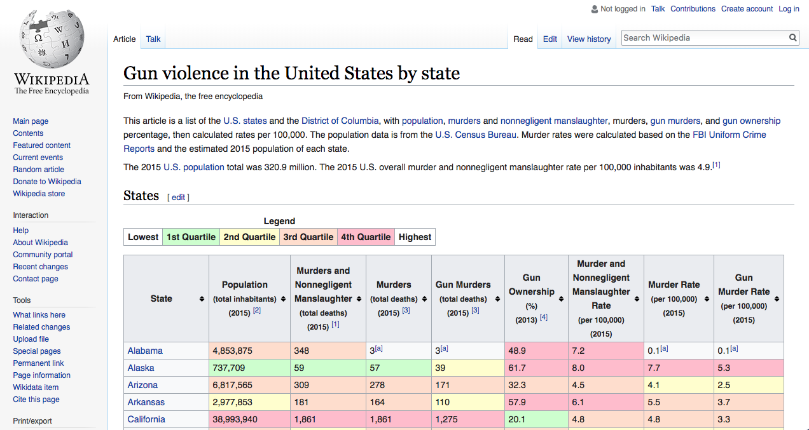
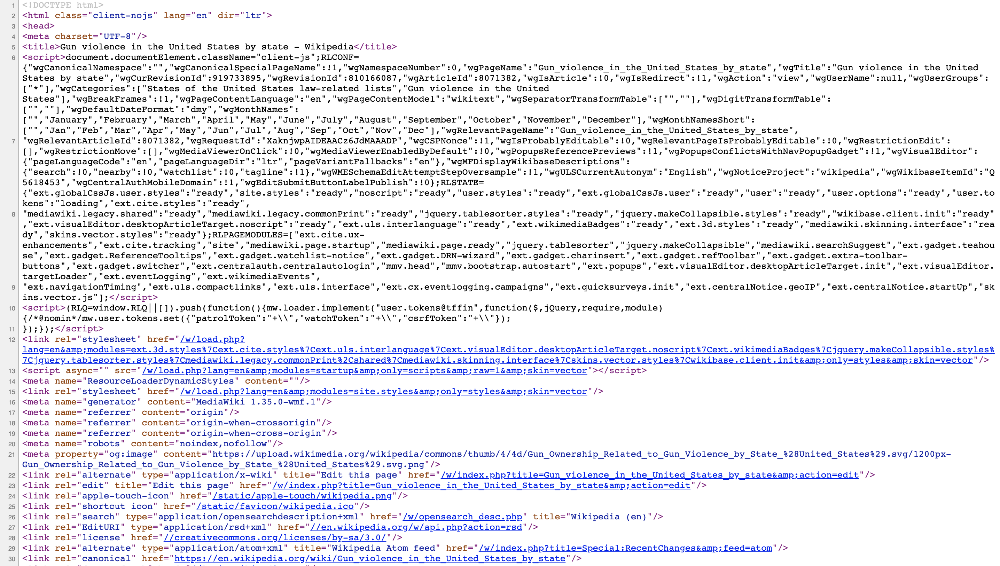

Chapter 44 Web Scraping
The data we need to answer a question is not always in a spreadsheet, ready for us to read. For example, the US murders dataset we used in the R Basics chapter originally comes from this Wikipedia page: https://en.wikipedia.org/w/index.php?title=Gun_violence_in_the_United_States_by_state&oldid=843135608. You can see the data table when you visit the webpage:

Unfortunately, there is no link to a data file. To make the data frame we loaded using data(murders) or reading-in the csv file made available through dslabs, we had to do some web scrapping.
Web scraping, or web harvesting, are the terms we use to describe the process of extracting data from a website. The reason we can do this is because the information used by a browser to render webpages is received as a text file from a server. The text is code written in hyper text markup language (HTML). Every browser has a way to show the html source code for a page, each one different. On Chrome you can use Control-U on a PC and command+alt+U on a Mac.

44.1 HTML
Because this code is accessible, we can download the HTML file, import it into R, and then write programs to extract the information we need from the page. However, once we look at HTML code, this might seem like a daunting task. But we will show you some convenient tools to facilitate the process. To get an idea of how it works, here are a few lines of code from the Wikipedia page that provides the US murders data:
p>The 2015 U.S. population total was 320.9 million. The 2015 U.S. overall murder rate per 100,000 inhabitants was 4.89.</p>
<h2><span class="mw-headline" id="States">States</span><span class="mw-editsection"><span class="mw-editsection-bracket">[</span><a href="/w/index.php?title=Murder_in_the_United_States_by_state&action=edit&section=1" title="Edit section: States">edit</a><span class="mw-editsection-bracket">]</span></span></h2>
<table class="wikitable sortable">
<tr>
<th>State</th>
<th><a href="/wiki/List_of_U.S._states_and_territories_by_population" title="List of U.S. states and territories by population">Population</a><br />
<small>(total inhabitants)</small><br />
<small>(2015)</small> <sup id="cite_ref-1" class="reference"><a href="#cite_note-1">[1]</a></sup></th>
<th>Murders and Nonnegligent
<p>Manslaughter<br />
<small>(total deaths)</small><br />
<small>(2015)</small> <sup id="cite_ref-2" class="reference"><a href="#cite_note-2">[2]</a></sup></p>
</th>
<th>Murder and Nonnegligent
<p>Manslaughter Rate<br />
<small>(per 100,000 inhabitants)</small><br />
<small>(2015)</small></p>
</th>
</tr>
<tr>
<td><a href="/wiki/Alabama" title="Alabama">Alabama</a></td>
<td>4,853,875</td>
<td>348</td>
<td>7.2</td>
</tr>
<tr>
<td><a href="/wiki/Alaska" title="Alaska">Alaska</a></td>
<td>737,709</td>
<td>59</td>
<td>8.0</td>
</tr>
<tr>You can actually see the data! We can also see a pattern of how it is stored. If you know HTML, you can write programs that leverage knowledge of these patterns to extract what we want. We also take advantage of a language widely used to make webpages look “pretty” called Cascading Style Sheets (CSS). We say more about this in the CSS Selector Section.
Although we provide tools that make it possible to scrape data without knowing HTML, for data scientists, it is quite useful to learn some HTML and CSS. Not only does this improve your scraping skills, but it might come in handy if you are creating a webpage to showcase you work. There are plenty of online courses and tutorials for learning these. Two examples are code academy and WWW3 school.
44.2 The rvest package
The tidyverse provides a web harvesting package called rvest. The first step using this package is to import the webpage into R. The package makes this quite simple:
library(rvest)
#> Loading required package: xml2
#>
#> Attaching package: 'rvest'
#> The following object is masked from 'package:purrr':
#>
#> pluck
#> The following object is masked from 'package:readr':
#>
#> guess_encoding
url <- "https://en.wikipedia.org/w/index.php?title=Gun_violence_in_the_United_States_by_state&oldid=843135608"
h <- read_html(url)Note that the entire Murders in the US Wikipedia webpage is now contained in h. The class of this object is:
class(h)
#> [1] "xml_document" "xml_node"The rvest package is actually more general; it handles XML documents. XML is a general markup language, that’s what the ML stand for, that can be used to represent any kind of data. HTML is a specific type of XML specifically developed for representing webpages. Here we focus on HTML documents.
Now, how do we extract the table from the object h? If we print h, we don’t really see much:
h
#> {xml_document}
#> <html class="client-nojs" lang="en" dir="ltr">
#> [1] <head>\n<meta http-equiv="Content-Type" content="text/html; charset= ...
#> [2] <body class="mediawiki ltr sitedir-ltr mw-hide-empty-elt ns-0 ns-sub ...When we know that the information is stored in an HTML table, you can see this in this line of the HTML code above <table class="wikitable sortable">. The different parts of an HTML document, often defined with a message in between < and > are referred to as nodes. The rvest package includes functions to extract nodes of an HTML document: html_nodes extracts all nodes of different types and html_node extracts the first one. To extract the tables from the html code we use:
tab <- h %>% html_nodes("table")Now, instead of the entire webpage, we just have the html code for the tables in the page:
tab
#> {xml_nodeset (4)}
#> [1] <table id="revision-info-current" class="plainlinks fmbox fmbox-syst ...
#> [2] <table class="wikitable">\n<caption>Legend\n</caption>\n<tbody><tr>\ ...
#> [3] <table class="wikitable sortable"><tbody>\n<tr>\n<th data-sort-type= ...
#> [4] <table class="nowraplinks hlist collapsible collapsed navbox-inner" ...The table we are interested is the third one:
tab[[3]]
#> {xml_node}
#> <table class="wikitable sortable">
#> [1] <tbody>\n<tr>\n<th data-sort-type="text">State\n</th>\n<th data-sort ...We are not quite there yet because this is clearly not a tidy dataset, not even a data frame. In the code above, you can definitely see a pattern and writing code to extract just the data is very doable. In fact, rvest includes a function just for converting HTML tables into data frames:
tab <- tab[[3]] %>% html_table
class(tab)
#> [1] "data.frame"We are now much closer to having a usable data table:
tab <- tab %>% setNames(c("state", "population", "total", "murder_rate"))
head(tab)
#> state population total murder_rate NA NA NA NA NA
#> 1 Alabama 4,853,875 348 3[a] 3[a] 48.9 7.2 0.1[a] 0.1[a]
#> 2 Alaska 737,709 59 57 39 61.7 8.0 7.7 5.3
#> 3 Arizona 6,817,565 309 278 171 32.3 4.5 4.1 2.5
#> 4 Arkansas 2,977,853 181 164 110 57.9 6.1 5.5 3.7
#> 5 California 38,993,940 1,861 1,861 1,275 20.1 4.8 4.8 3.3
#> 6 Colorado 5,448,819 176 176 115 34.3 3.2 3.2 2.1We still have some wrangling to do. For example, we need to remove the commas and turn characters into numbers. Before continuing with this, we will learn a more general approach to extracting information from web sites.
44.3 CSS selectors
The default look of a webpage made with the most basic HTML is quite unattractive. The aesthetically pleasing pages we see today are made using CSS, which is used to add style to webpages. The fact that all pages for a company have the same style is usually a result that they all use the same CSS file to define the style. The general way these CSS files work is by defining how each of the elements of a webpage will look. The title, headings, itemized lists, tables, and links, for example, each receive their own style including font, color, size, and distance from the margin. CSS does this by leveraging patterns used to define these elements, referred to as selectors. An example of such a pattern, which we used above, is table, but there are many, many more.
If we want to grab data from a webpage and we happen to know a selector that is unique to the part of the page containing this data, we can use the html_nodes function. However, knowing which selector can be quite complicated. In fact, the complexity of webpages has been increasing as they become more sophisticated. For some of the more advanced ones, it seems almost impossible to find the notes that define a particular piece of data. However, selector gadgets actually make this possible.
SelectorGadget is piece of software that allows you to interactively determine what CSS selector you need to extract specific components from the webpage. If you plan on scrapping data other than tables, we highly recommend you install it if you are interested in scrapping html pages. A Chrome extension is available which permits you to turn on the gadget and then, as you click through the page, it highlights parts and shows you the selector you need to extract these parts. There are various demos of how to do this including author Hadley Wickham’s vignetter, and these two tutorials based on the package vignette.
We add an example here that tries to extract the recipe name, total preparation time, and list of ingredients from this Guacamole recipe. Looking at the code for this page, it seems that the task is impossibly complex. For the Guacamole recipe page, we already have determined that we need the following selectors:
h <- read_html("http://www.foodnetwork.com/recipes/alton-brown/guacamole-recipe-1940609")
recipe <- h %>% html_node(".o-AssetTitle__a-HeadlineText") %>% html_text()
prep_time <- h %>% html_node(".o-RecipeInfo__a-Description--Total") %>% html_text()
ingredients <- h %>% html_nodes(".o-Ingredients__a-ListItemText") %>% html_text()You can see how complex the selectors are. In any case, we are now ready to extract what we want and create a list:
guacamole <- list(recipe, prep_time, ingredients)
guacamole
#> [[1]]
#> [1] "Guacamole"
#>
#> [[2]]
#> [1] NA
#>
#> [[3]]
#> character(0)Since recipe pages from this website follow this general layout, we can use this code to create a function that extracts this information:
get_recipe <- function(url){
h <- read_html(url)
recipe <- h %>% html_node(".o-AssetTitle__a-HeadlineText") %>% html_text()
prep_time <- h %>% html_node(".o-RecipeInfo__a-Description--Total") %>% html_text()
ingredients <- h %>% html_nodes(".o-Ingredients__a-ListItemText") %>% html_text()
return(list(recipe = recipe, prep_time = prep_time, ingredients = ingredients))
}Then we can use it to extract recipes from any of their webpages:
get_recipe("http://www.foodnetwork.com/recipes/food-network-kitchen/pancakes-recipe-1913844")
#> $recipe
#> [1] "Pancakes"
#>
#> $prep_time
#> [1] "22 min"
#>
#> $ingredients
#> [1] "1 1/2 cups all-purpose flour"
#> [2] "3 tablespoons sugar"
#> [3] "1 tablespoon baking powder"
#> [4] "1/4 teaspoon salt"
#> [5] "1/8 teaspoon freshly ground nutmeg"
#> [6] "2 large eggs, at room temperature"
#> [7] "1 1/4 cups milk, at room temperature"
#> [8] "1/2 teaspoon pure vanilla extract"
#> [9] "3 tablespoons unsalted butter, plus more as needed"
get_recipe("https://www.foodnetwork.com/recipes/giada-de-laurentiis/pasta-primavera-recipe-1942131")
#> $recipe
#> [1] "Pasta Primavera"
#>
#> $prep_time
#> [1] "45 min"
#>
#> $ingredients
#> [1] "3 carrots, peeled and cut into thin strips"
#> [2] "2 medium zucchini or 1 large zucchini, cut into thin strips"
#> [3] "2 yellow squash, cut into thin strips"
#> [4] "1 onion, thinly sliced"
#> [5] "1 yellow bell pepper, cut into thin strips"
#> [6] "1 red bell pepper, cut into thin strips"
#> [7] "1/4 cup olive oil"
#> [8] "Kosher salt and freshly ground black pepper"
#> [9] "1 tablespoon dried Italian herbs or herbes de Provence"
#> [10] "1 pound farfalle (bowtie pasta)"
#> [11] "15 cherry tomatoes, halved"
#> [12] "1/2 cup grated Parmesan"There are several other powerful tools provided by rvest. For example, the functions html_form, set_values, and submit_form permit you to query a webpage from R. This is a more advanced topic not covered here.
44.4 JSON
Sharing data on the internet has become more and more common. Unfortunately, providers use different formats which makes it harder for data scientists to wrangle data into R. Yet there are some standards that are also becoming more common. Currently, a format that is widely being adopted is the JavaScript Object Notation or JSON. Because this format is very general, it is nothing like a spreadsheet. This JSON files look more like the code you use to define a list. Here is an example of information stored in a JSON format:
#>
#> Attaching package: 'jsonlite'
#> The following object is masked from 'package:purrr':
#>
#> flatten
#> [
#> {
#> "name": "Miguel",
#> "student_id": 1,
#> "exam_1": 85,
#> "exam_2": 86
#> },
#> {
#> "name": "Sofia",
#> "student_id": 2,
#> "exam_1": 94,
#> "exam_2": 93
#> },
#> {
#> "name": "Aya",
#> "student_id": 3,
#> "exam_1": 87,
#> "exam_2": 88
#> },
#> {
#> "name": "Cheng",
#> "student_id": 4,
#> "exam_1": 90,
#> "exam_2": 91
#> }
#> ]The file above actually represents a data frame. To read it, we can use the function fromJSON from the jsonlite package. Note that JSON files are often made available via the internet. Several organization provide a JSON API or a web service that you can connect directly to and obtain data. Here is an example:
library(jsonlite)
citi_bike <- fromJSON("http://citibikenyc.com/stations/json")This downloads a list. The first argument tells you when you downloaded it:
citi_bike$executionTime
#> [1] "2018-08-30 11:48:10 PM"and the second is a data table:
head(citi_bike$stationBeanList)
#> id stationName availableDocks totalDocks latitude
#> 1 72 W 52 St & 11 Ave 17 39 40.8
#> 2 79 Franklin St & W Broadway 32 33 40.7
#> 3 82 St James Pl & Pearl St 10 27 40.7
#> 4 83 Atlantic Ave & Fort Greene Pl 45 62 40.7
#> 5 119 Park Ave & St Edwards St 12 19 40.7
#> 6 120 Lexington Ave & Classon Ave 4 19 40.7
#> longitude statusValue statusKey availableBikes
#> 1 -74 In Service 1 22
#> 2 -74 In Service 1 0
#> 3 -74 Not In Service 3 17
#> 4 -74 In Service 1 16
#> 5 -74 In Service 1 7
#> 6 -74 In Service 1 14
#> stAddress1 stAddress2 city postalCode location
#> 1 W 52 St & 11 Ave
#> 2 Franklin St & W Broadway
#> 3 St James Pl & Pearl St
#> 4 Atlantic Ave & Fort Greene Pl
#> 5 Park Ave & St Edwards St
#> 6 Lexington Ave & Classon Ave
#> altitude testStation lastCommunicationTime landMark
#> 1 FALSE 2018-08-30 11:45:56 PM
#> 2 FALSE 2018-08-30 11:47:31 PM
#> 3 FALSE 2018-08-30 11:48:05 PM
#> 4 FALSE 2018-08-30 11:46:05 PM
#> 5 FALSE 2018-08-30 11:46:40 PM
#> 6 FALSE 2018-08-30 11:44:52 PMYou can learn much more by examining tutorials and help files from the jsonlite package. This package is intended for relatively simple tasks such as converging data into tables. For more flexibility, we recommend rjson.